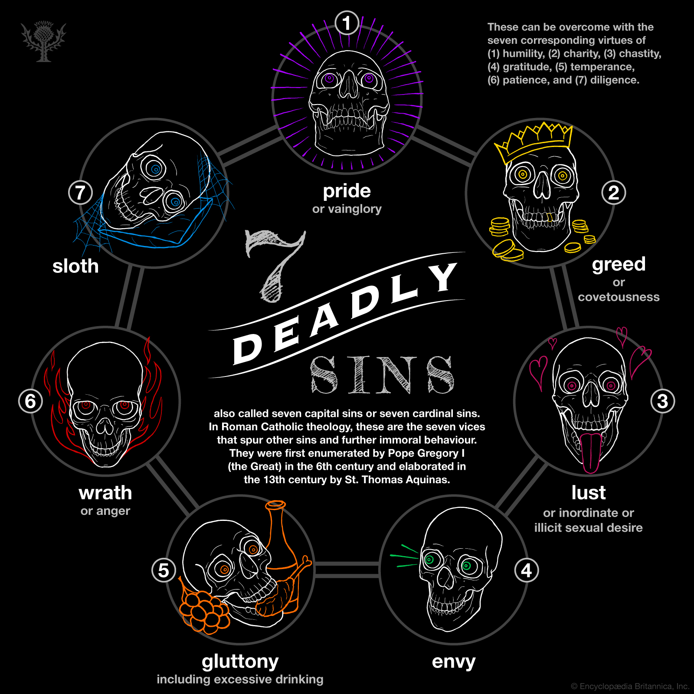

The Bible says the following in Jeremiah 9:23-24, “...Let not the mighty man boast of his might...but let him who boasts
boast of this, that he understands and knows Me...”
Pride is also mentioned in the following verses: Proverbs 8:13, Proverbs 16:18, Romans 12:16, 1 Corinthians 13:4, Galatians 6:3 and James 4:6-7.
Humility cures pride by removing one's ego and boastfulness, therefore allowing the attitude of service.